{ user guide }
Using Motion Studio
Everything the app does, in the order you meet it: install it, teach it your brand, write a brief, then iterate with the agent and the editor until every format is ready to export. The screenshots are of the real app, on a demo project called Ember Coffee.
Install and requirements
Motion Studio runs on your computer and opens in your browser, or in its own desktop window. The agent is Claude Code, so it needs to be installed and signed in first.
Requirements
- Claude Code, installed and signed in (
claude auth login). - Git.
- FFmpeg, to render compositions into videos (stills need none; without it, outputs show as "unverified").
- Node.js 22 or newer, for the sources and
npx(not for the desktop app). - For the npm version only: Google Chrome or Chromium, which renders the compositions. Without it, Settings → System check offers to download Chrome for Testing, after showing its size and with your consent. The desktop app renders with its own Chromium.
Three ways to install
- From source, available today: clone the repository, then run
pnpm installandpnpm motion-studio. It builds and starts onhttp://127.0.0.1:4317and opens the browser. - Desktop app: download the installer from the project's GitHub Releases, once published (macOS Apple Silicon and Intel, Windows, Linux). An unsigned macOS build opens the first time with right-click → Open.
- From npm:
npx @motion-studio/cli, once published. The installed command ismotion-studio.
git clone https://github.com/Aleloca/motion-studio
cd motion-studio
pnpm install
pnpm motion-studioLauncher options go after the script name, for example pnpm motion-studio --port 5000 --no-open: --port <n> (default 4317), --no-open (do not open the browser) and --print-url (print the address of the Motion Studio already running).
The address printed at startup carries an access code (#t=…). Open Motion Studio from that link; if the interface ever asks you to reopen it from the terminal, run motion-studio --print-url. Only one Motion Studio runs per configuration folder: a second launch opens the one already running.
First launch
The first time, a three-step setup checks your computer, asks where to keep projects and creates the first one.
- Check your setup. Motion Studio looks for Node.js, Git, FFmpeg, Claude Code and its sign-in, whether live messages and interrupt work with your Claude Code version, and whether the agent sandbox is available. A missing required tool says how to fix it; Continue once everything needed passes.
- Choose a workspace. The folder where every project is saved (each project is a folder of JSON and Markdown files under git).
- Create your first project. Give it a name; you can then add its website in Brand.

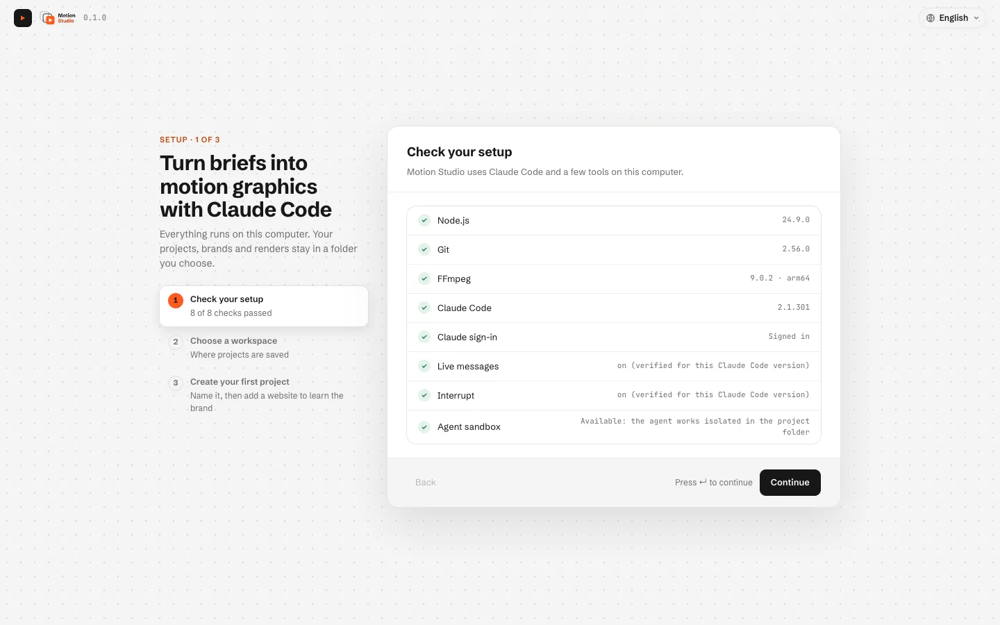
Settings
Open Settings from the account menu (the round badge at the top right). They apply to every project on this computer.
General: language and theme
Language is System, English or Italiano. System uses the first of your preferred languages that Motion Studio supports. The interface, the desktop menus and the terminal messages switch at once, and the agent replies, and writes the texts meant for you, in the chosen language. Texts saved earlier are not translated. Theme follows the system, or stays light or dark.

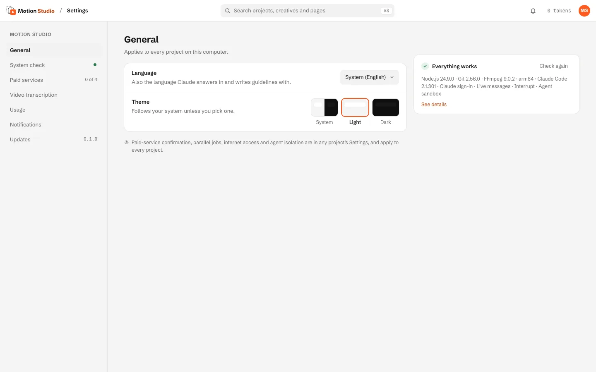
System check
The same checks as the first launch, with Check again, plus the render engine (the Chrome or Chromium that renders compositions).

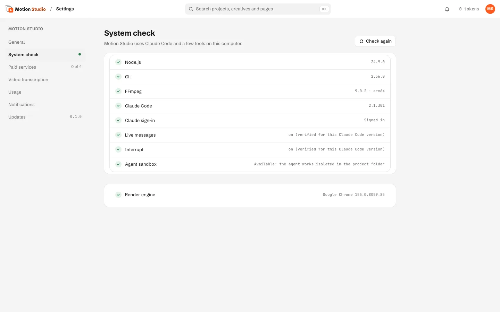
The agent backend
The agent is Claude Code, the one you installed and signed in to. The model is set in a project's Settings → Agent and approvals (empty: Claude Code's default). Live messages and interrupt are on for Claude Code 2.1.301 and newer; to switch either off, set agentLiveInput or agentInterrupt to false in the workspace's .studio/settings.json (there is no switch in the interface).
Paid services and keys
Paid services are optional. Add a key per provider: OpenAI (images and voice-over), ElevenLabs (voices, music, sound effects), Pexels and Unsplash (stock footage and photos). Saving a key, or its Test button, tries it with free, read-only requests and shows what it can do. Keys live in the system keychain (or in the OPENAI_API_KEY, ELEVENLABS_API_KEY, PEXELS_API_KEY, UNSPLASH_ACCESS_KEY environment variables) and the agent never sees them.

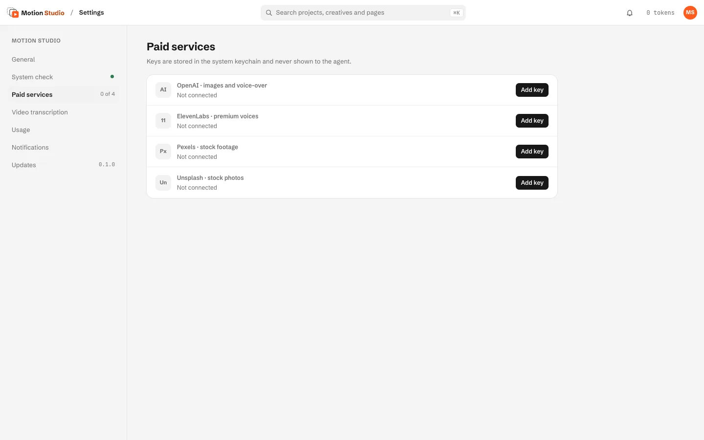
Every image, voice-over, sound effect or music generation asks for confirmation before the paid call, from the agent and from Generate in Assets alike. You can turn that off in a project's Settings with Confirm before using paid services.
Video transcription
When a video with speech enters a brief, Motion Studio can transcribe it: Ask every time, Whisper on the Mac (free, local; install the Small model, about 490 MB, or Large v3 Turbo, about 1.6 GB), OpenAI or ElevenLabs (paid, with a key) or Never. You can also point to a Whisper already installed (whisper.cpp, openai-whisper or faster-whisper); it is test-run on one second of audio before it is saved.

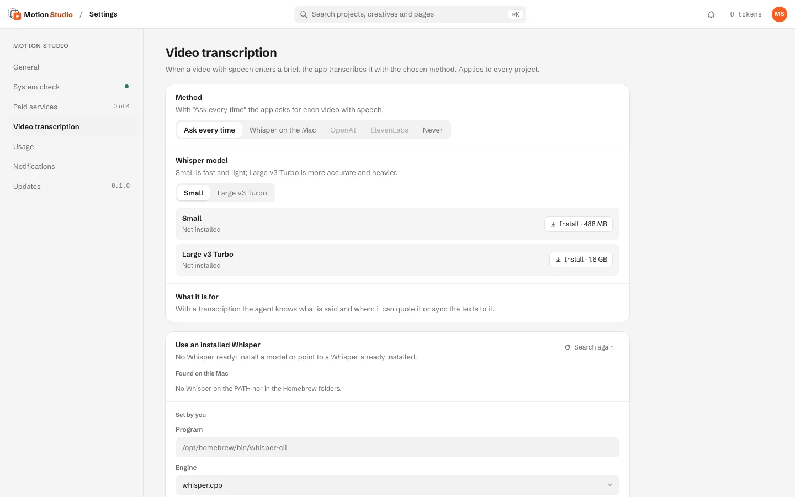
Notifications and updates
Notifications: when the agent needs your OK (a banner, the Dock badge and a notification), when a creative is ready (only while Motion Studio is in the background), with or without a sound; Send a test notification checks that you see them. Updates shows the version; the desktop app checks for updates at launch when the build is signed.

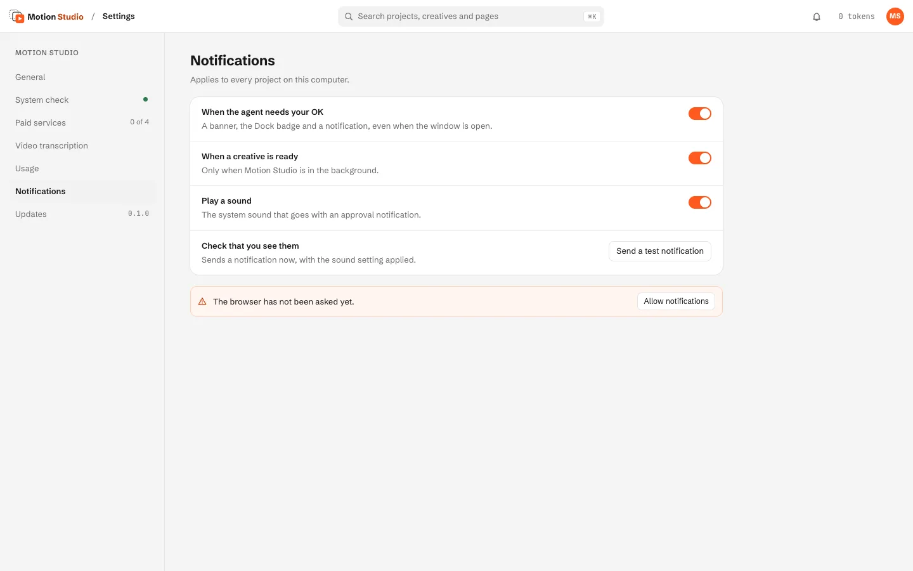
Projects
A project holds one brand: its brand kit, its Assets and references, and its creatives.
- On Projects, type a name in Start a new project and press Create (or + New project).
- Open a project: its tabs are Creatives, Brand, Assets, References and Settings. The search box at the top (⌘K) finds projects, creatives and pages.

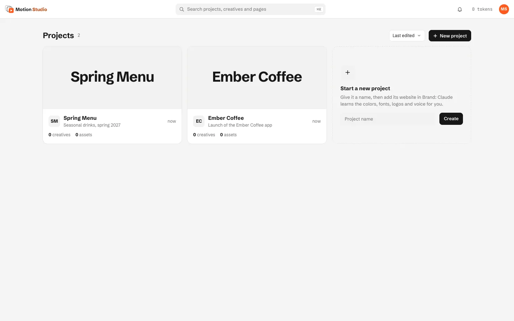

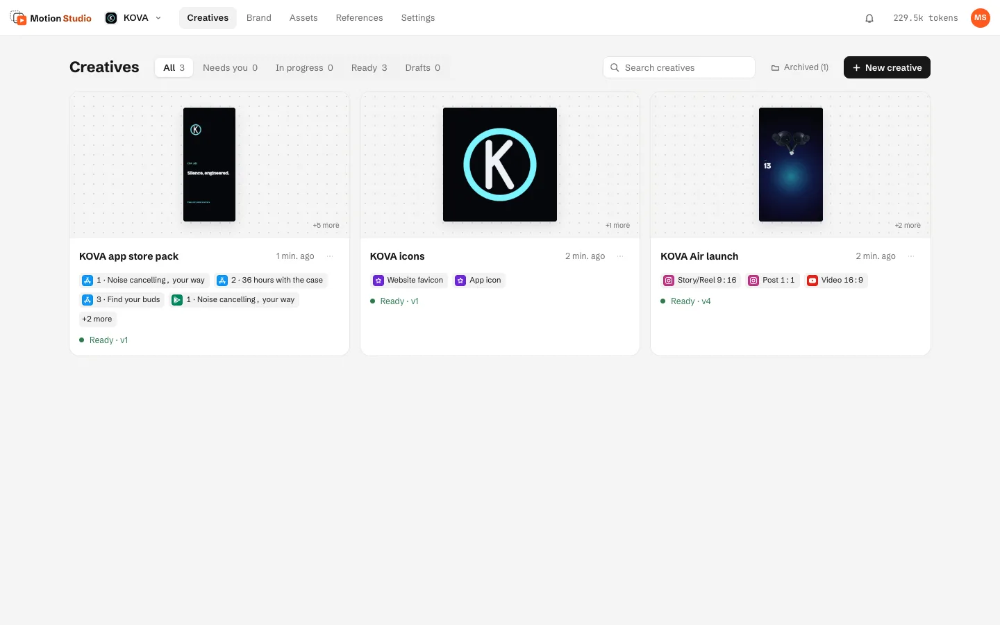
Project settings
General holds the name, the description (the agent reads both in every job) and the project icon. Agent and approvals holds what the agent may do without asking: automatic approval of sandboxed commands, the paid-service confirmation, how many jobs run at the same time, the rules you allowed with "Always", the agent isolation and the model. Internet access lists the extra websites creatives may reach, and Linked code the folders the agent may read (never write).

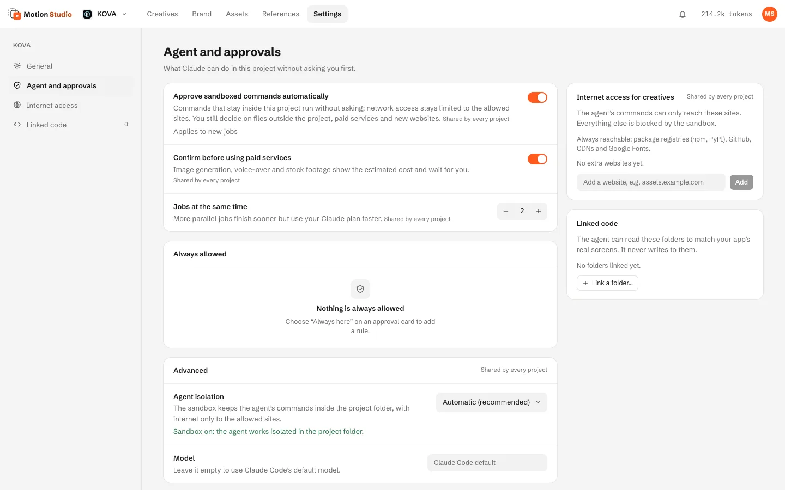

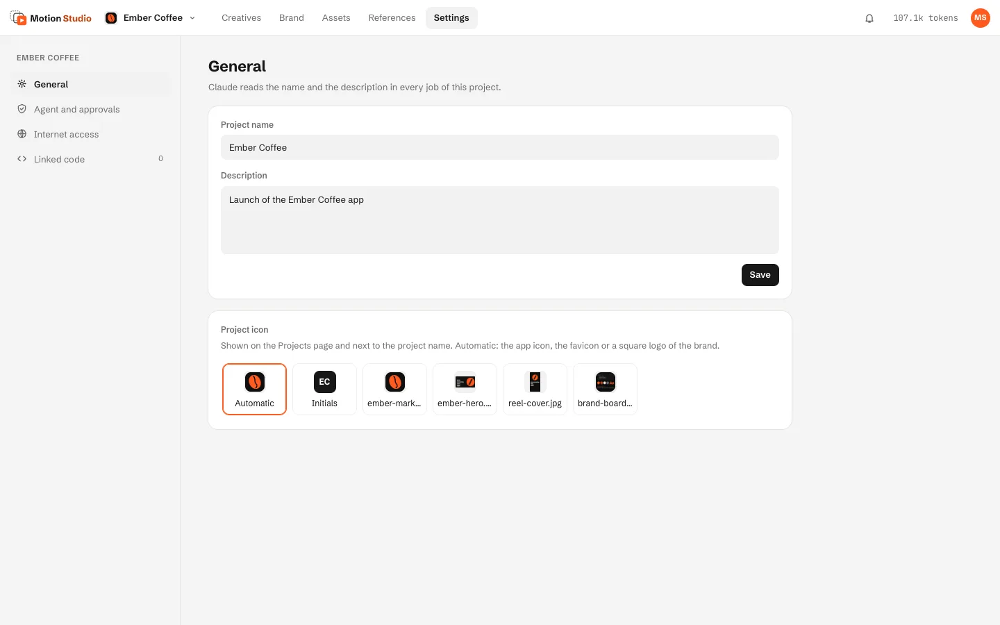
Brand
The brand kit keeps every format consistent: palette, fonts, logos, voice, do and avoid rules, photo style and sound. Every entry says where it came from.
From a website
- On the Brand tab of a new project, paste the website and press Analyze (or Or set it up by hand). Later, add more sources in the Sources panel (websites, and reference images marked "Use for brand analysis") and press Analyze again.
- The analysis shows its phases: reading, fonts, colours, logos, tone, writing. Google fonts are fetched into the project, self-hosted ones downloaded, Adobe and system fonts only named.
- When Suggestions ready appears, press Review and apply the suggestions entry by entry. Entries you typed by hand are never removed.

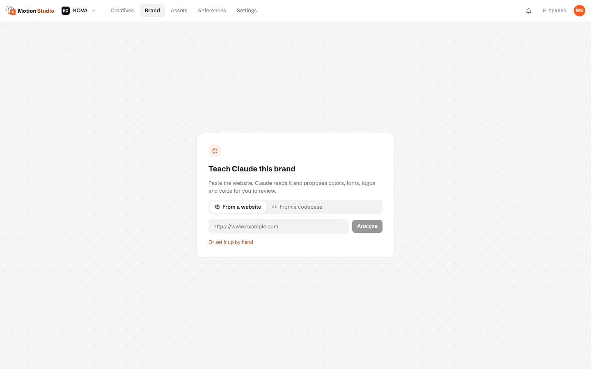

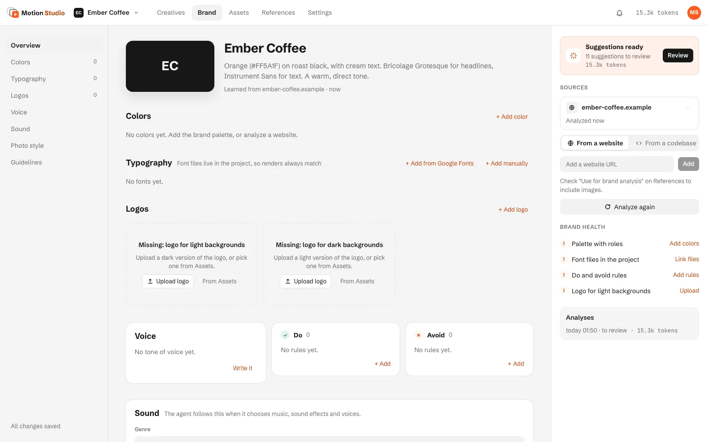

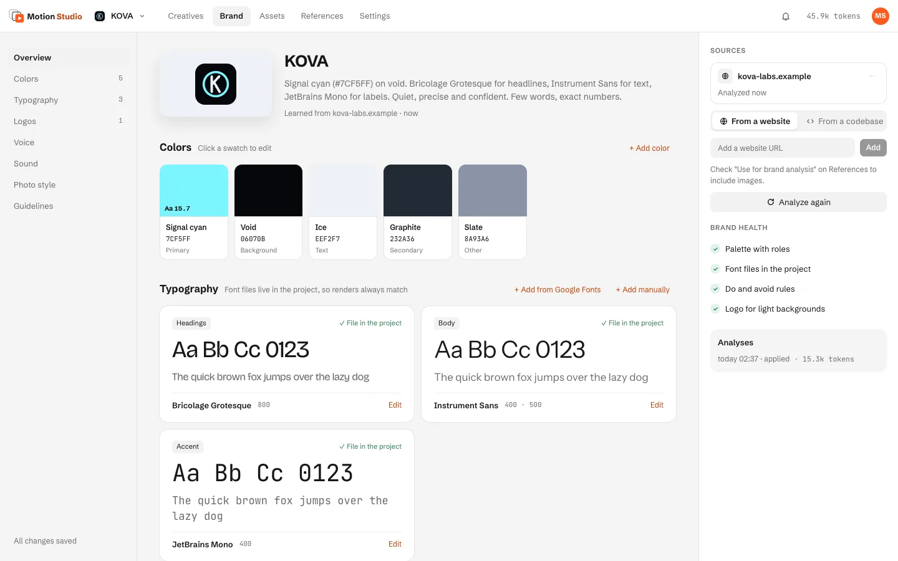
From a codebase
Choose From a codebase (on the empty Brand page, or in the Sources panel) and pick the folder of your app or site, with an optional note (up to 5 per brand, mixed freely with websites). The agent reads design tokens and themes, fonts, logos and icons, and the tone of your README and store texts. It only reads: no commands, no content search, and secret files (.env*, keys, credentials and the like) are never opened. If anything in the folder changes during the analysis, the proposal is discarded.
Fonts, sound and guidelines
- Typography → + Add from Google Fonts searches the catalogue, previews each family and adds the weights you tick to the project; + Add manually links your own files.
- Sound holds the genre, energy, instruments to use and avoid, and the brand voice (picked from your ElevenLabs voices or OpenAI's list).
- Guidelines is the brand's prose, in
brand/guidelines.md.
Assets and references
Assets are the project's files the agent can use in a creative: images, SVG, video, fonts and audio.
- Upload, or drop files anywhere on the page (up to 200 MB each). Filter by type, origin and tag, sort by date, name, type or duration.
- Click a file to open its details: play audio and video, add a description and tags, Rename file (the brand kit and briefs that use it follow), or Use in a creative.
- Describe them asks the agent to describe the files that have no description yet.

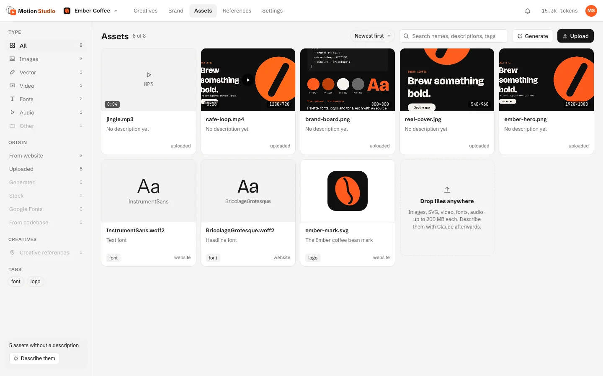

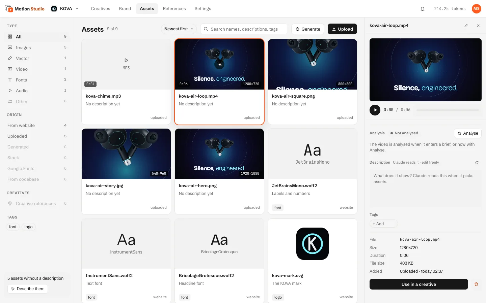
Video analysis
A video that enters a brief is analysed once: frames at each cut and the audio are extracted on your computer, the speech is transcribed if you allow it, and a read-only agent describes what is on screen. The result is a text file next to the video (summary, timeline, on-screen text, transcript, usable moments) that the agents read before opening the video. In Assets press Analyse to do it now; videos over 20 minutes ask first. When a video has speech and no transcription method is set, a choice appears: install Whisper, transcribe with OpenAI or ElevenLabs, or continue without. no screenshot
The analysis result and the transcription choice are not pictured: they need a real agent run and, for speech, a transcription method.
Generate
Generate makes an image (OpenAI), a voice-over (OpenAI or ElevenLabs), a sound effect or a music track (ElevenLabs) straight into Assets, after the usual paid confirmation. A tab works only when its provider's key is set.

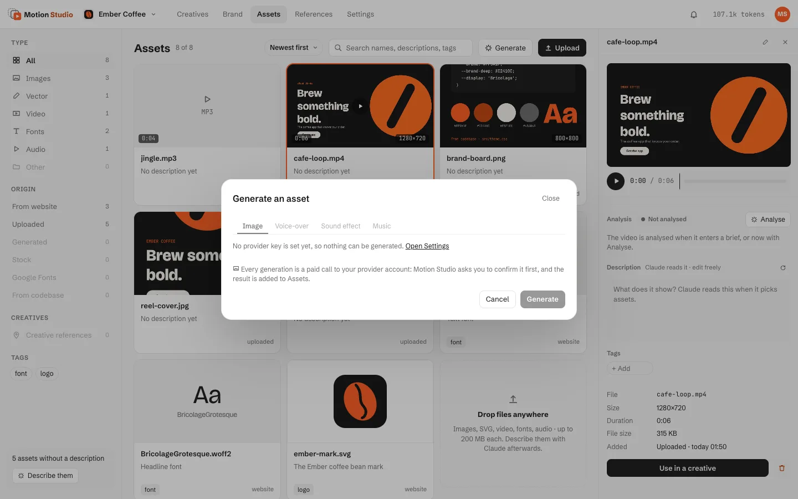
References
References are images for the look and feel: the agent reads them, and they can feed the brand analysis, but renders only use what is in Assets.

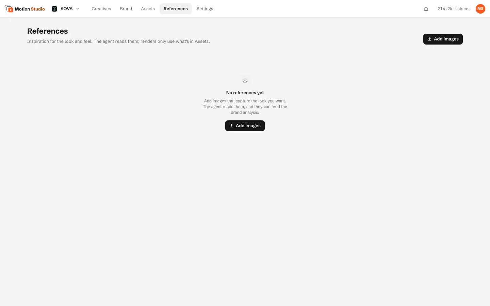
New creative and the brief
A creative is one idea in many formats. The brief says what to make, and the agent makes one composition per format.
Fill it in yourself
- In a project, open Creatives → + New creative.
- Describe what you want to make (or start from a Try suggestion), and add the key message shown on screen.
- Pick the formats under Where will it be published?: Instagram, TikTok, YouTube, and more channels (Facebook, LinkedIn, X, Pinterest, Web, Identity, App Store, Play Store), or a Custom size. The + and − on a selected format add copies of it.
- Set the video length, the assets to use (from your computer or from Assets) and, under More options, notes for the agent, codebases and Services.
- Press Generate (⌘↵), or Save draft. It runs in the background and tells you when it is ready.

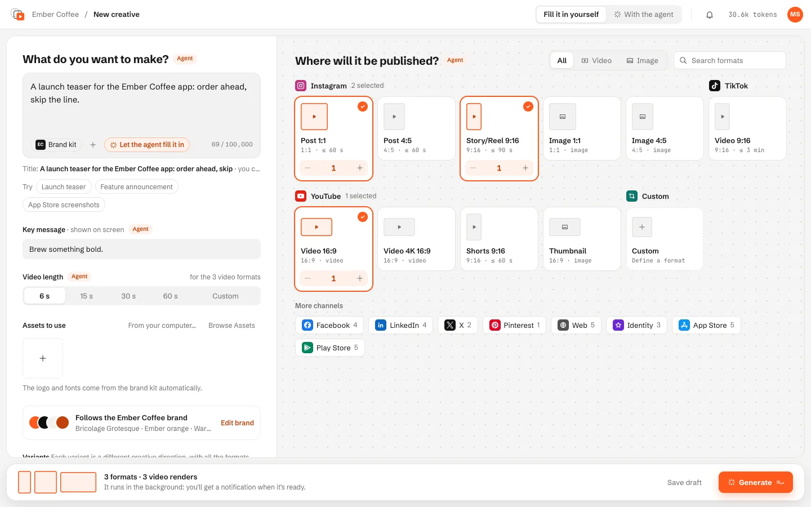
With the agent
With the agent (top bar), or Let the agent fill it in, opens a chat with a read-only agent beside the form. Tell it what you want; the + under the message links code folders or attaches assets. It fills the real form and marks each field it wrote with Agent. A field you change by hand is yours: the agent never overwrites it unless you ask. Nothing is created until you press Generate; the chat then becomes the start of the creative's chat. Leaving the page keeps the session, and New creative later offers Resume or Start over.

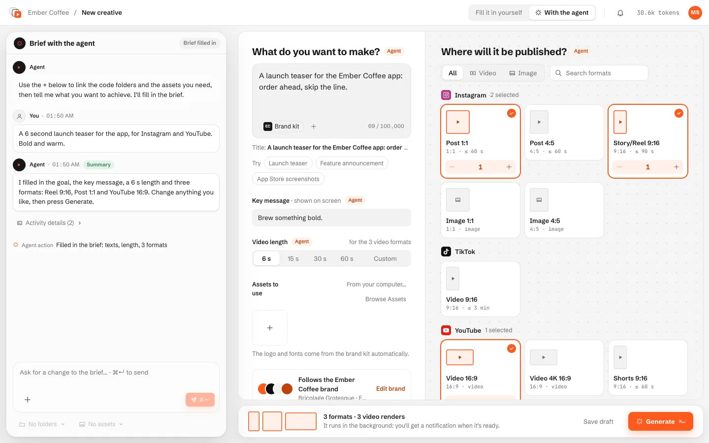
The form warns when the text states another duration than the field ("The text says 60 s, the duration is 6 s · Use 60 s"), and estimates the tokens from your own past first generations.
Services per creative
The brief says which external services the agent may use, per kind: images (Auto, OpenAI, Stock only, Off), voice (Auto, OpenAI, ElevenLabs, Off), music and sound effects (Auto, ElevenLabs, Off). Motion Studio enforces the choice in every agent tool, before any confirmation; a provider without its key cannot be chosen. A change applies from the next message.
The canvas
A creative opens on its canvas: a board per format, the formats list on the left and the chat on the right.
- Each board plays a live preview of its composition, with no render to wait for. Its badge (★ v2) is the version used for export.
- Motion Studio checks each composition (schema, files, duration against the brief); if something is off it asks the agent to fix it, up to 3 attempts, then saves the version.
- Point at a board for Open editor, or click a format in the list.
- The right panel has three tabs: Chat, Comments and Brief (with Edit the brief).

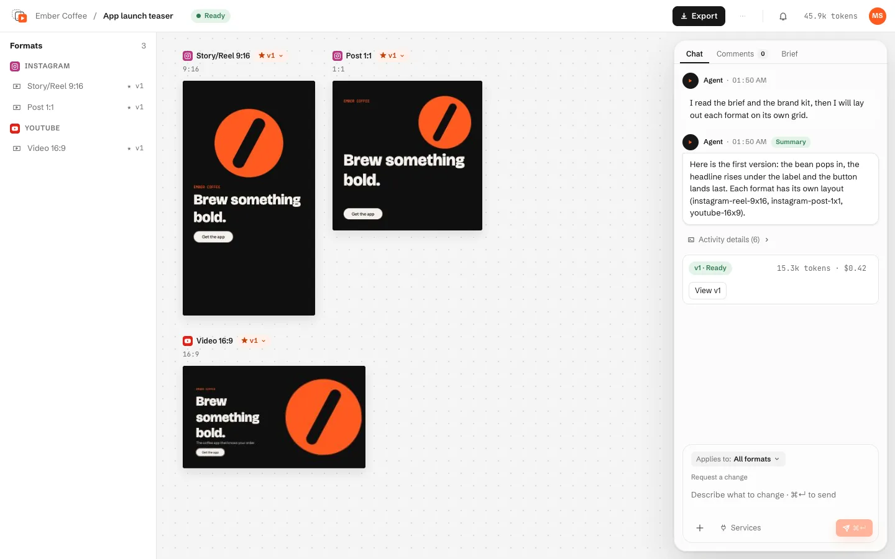

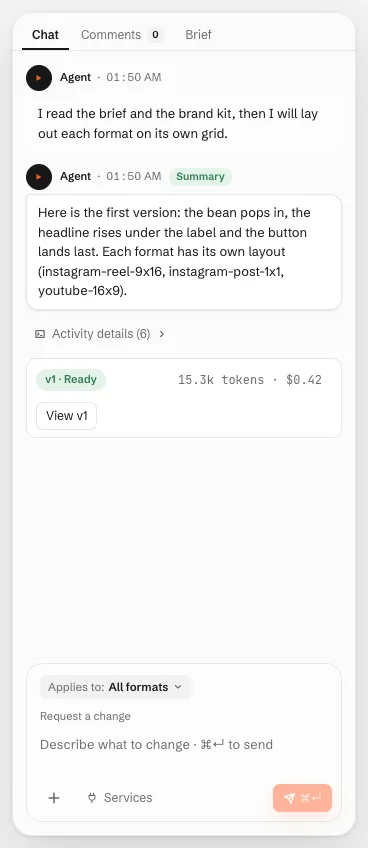

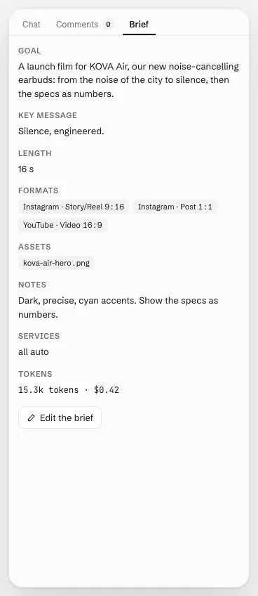
The chat
Ask for changes in words. Each request is a turn of the agent, and each turn that changes something saves a new version.
- Type in Request a change and press ⌘↵ (Ctrl+↵ on Windows and Linux).
- Applies to limits the request to some formats (all by default).
- + attaches files: from your computer (they are saved in Assets too) or from Assets.
- Services changes which paid services the agent may use for this creative.

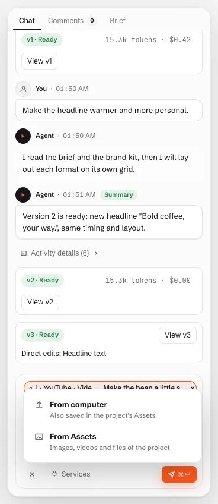

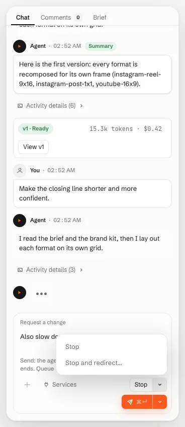

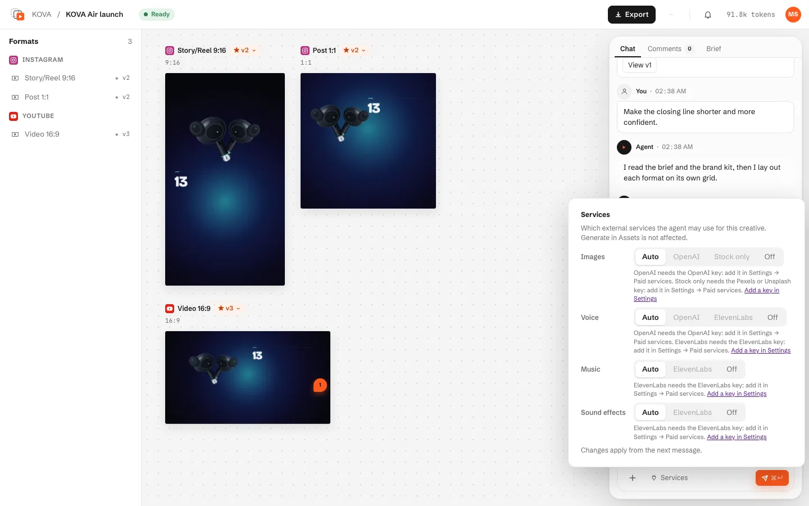
Talking to it while it works
The message box stays active while the agent works.
- Send (live): with Claude Code 2.1.301 or newer the message reaches the running agent, which reads it when its current step ends. It shows "Sent", then "Delivered" when Claude Code took it.
- Queue for after: the message runs as the next request. You can edit, remove and reorder queued requests; after a failure, a Stop or a restart they wait for Run next.
- Stop stops the turn at once and cancels any open approval. The next request resumes the stopped session, so the agent knows what was left half done.
- Stop and redirect… stops the current step and continues the same job with your new text.

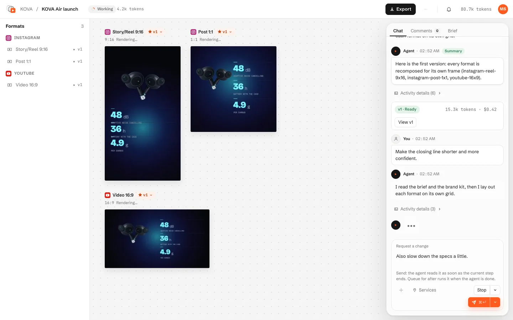
Steps and agent actions
Activity details under a reply lists the steps the agent took (files read and written, commands, approvals). In a creative turn the agent can also act on the app, without a confirmation card: change the brief, add a format or a language, add or discard a variant, set the ★, render a version. Each action is a line marked Agent action. It never archives, deletes, or touches settings, keys or permissions, and paid services keep their confirmations.
Approvals
Anything outside the agent's perimeter (installing a program, writing outside the project, a new website) appears as a request on the job and at the top right: Allow once, Always for this project or Deny. Each card explains the command in plain words with risk indicators; Show command shows it all. With no answer in 10 minutes the request is denied. no screenshot
Versions
Every change is a version (v1, v2…), and every version is a git commit of the project.
- The ★ badge of a format opens its versions: view any of them, set the ★ (the version exported) or Compare.
- Compare shows two versions side by side or overlaid, with one transport for both, and Use vN for export.
- View vN on a version card in the chat opens it read-only. Version history, in the ⋯ menu, lists every version of the creative, and you can restart from an earlier one.

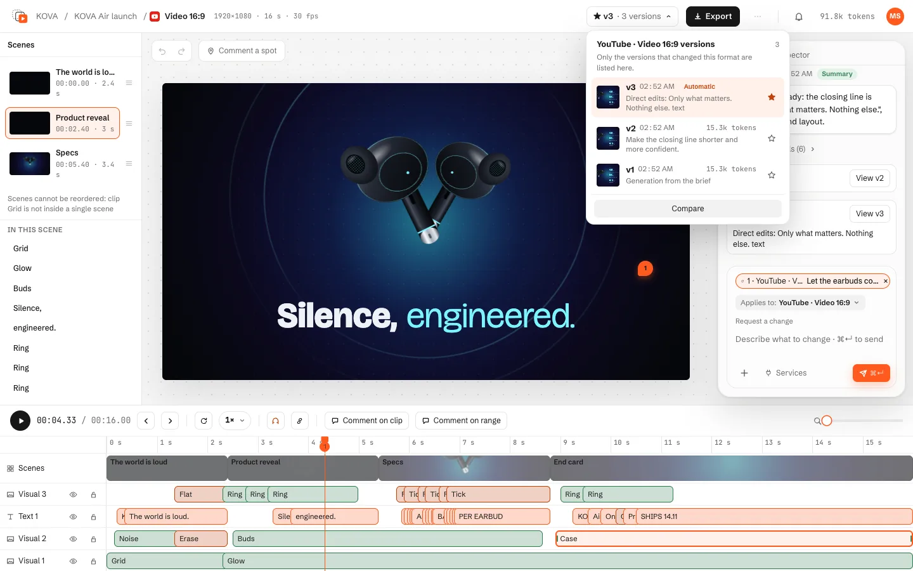

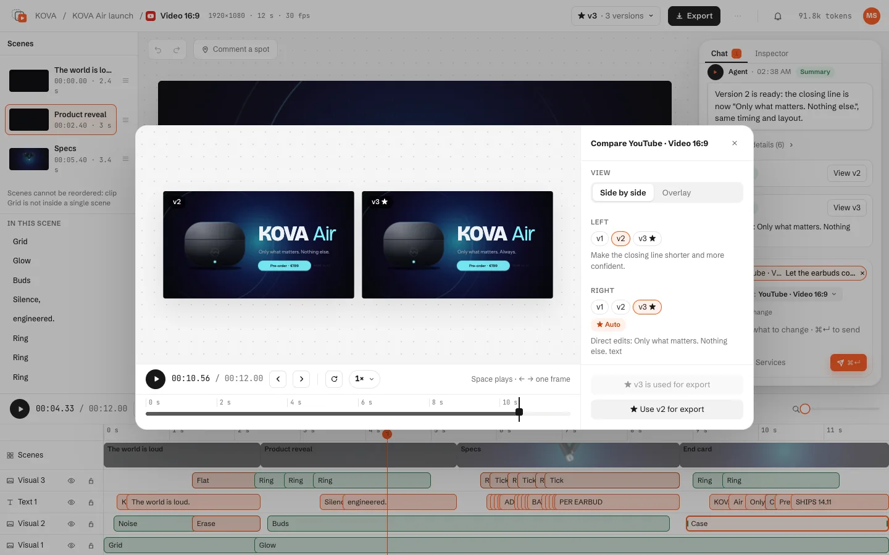

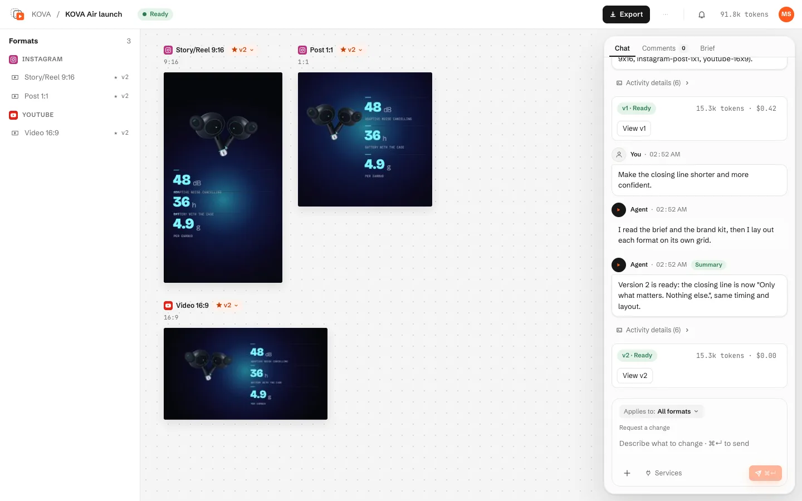
The format view and editor
Opening a format opens its editor: scenes (or layers, for a still) on the left, the stage with the live preview in the middle, the timeline below, and Chat and Inspector on the right.

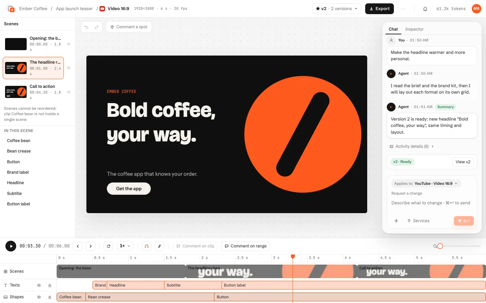
Direct edits
- Select a clip on the timeline, on the stage or in In this scene: the Inspector opens.
- Change a text's content, font (one of the composition's, or a brand font with a file), weight, size, colour and alignment; position, size, rotation and opacity with the handles or the numbers (Alt+arrows nudges); timing by trimming and moving clips on the timeline (Ripple pushes later scenes); the entry and exit animation presets; replace an image, video or audio file from Assets.
- The pill Draft · N edits offers Save as vN and Discard. Saving makes a normal new version, with no agent and no tokens.

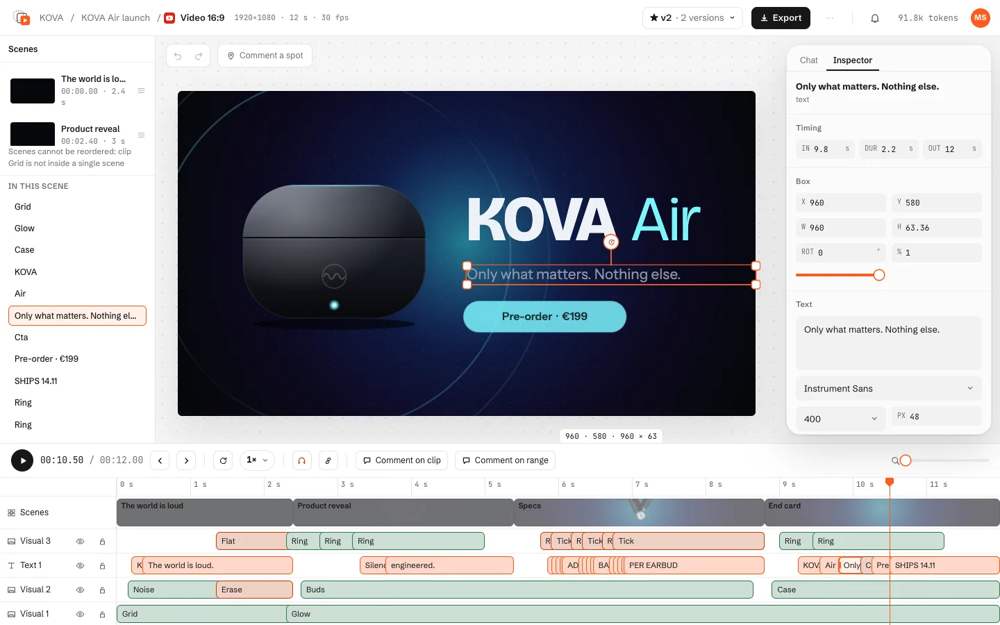

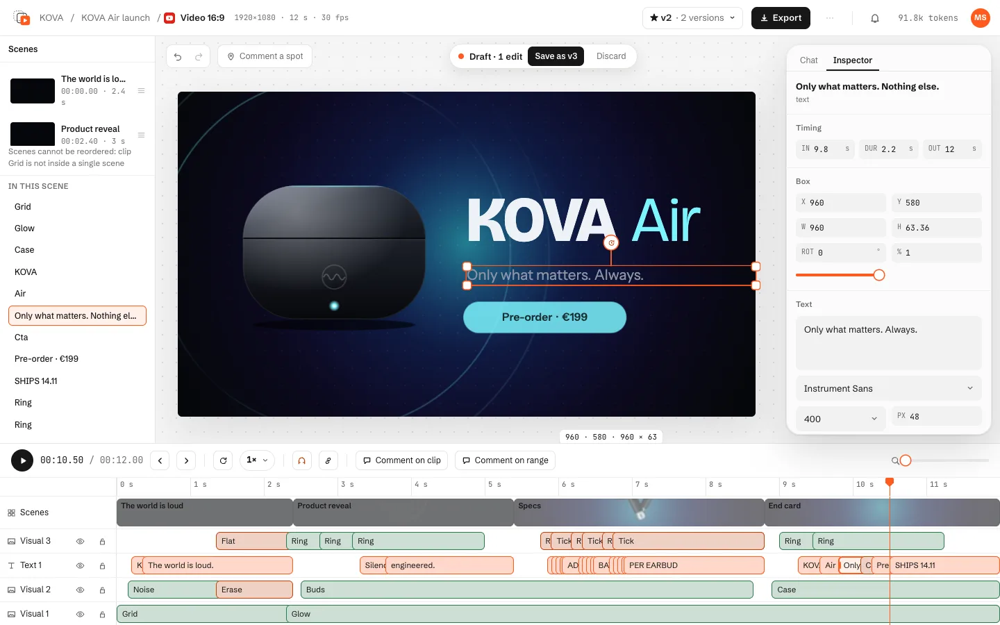
⌘Z and ⇧⌘Z undo and redo; Space plays; ← → step one frame; P comments a spot, C a clip, R a range (or Shift+drag on the ruler).
New clips, layers, custom animations, effects and new scenes stay with the agent: ask for them in the chat. An earlier version, a discarded variant, or a creative while a turn or a render runs open read-only, with the reason on the stage. Leaving with unsaved edits asks "Save · Discard · Keep editing".
Comments for the agent
Comment a spot of the frame (Comment a spot, then click it), a clip (Comment on clip) or a time range (Comment on range). The comment becomes a chip in the message box, and the agent gets the clip, the time and a frame.

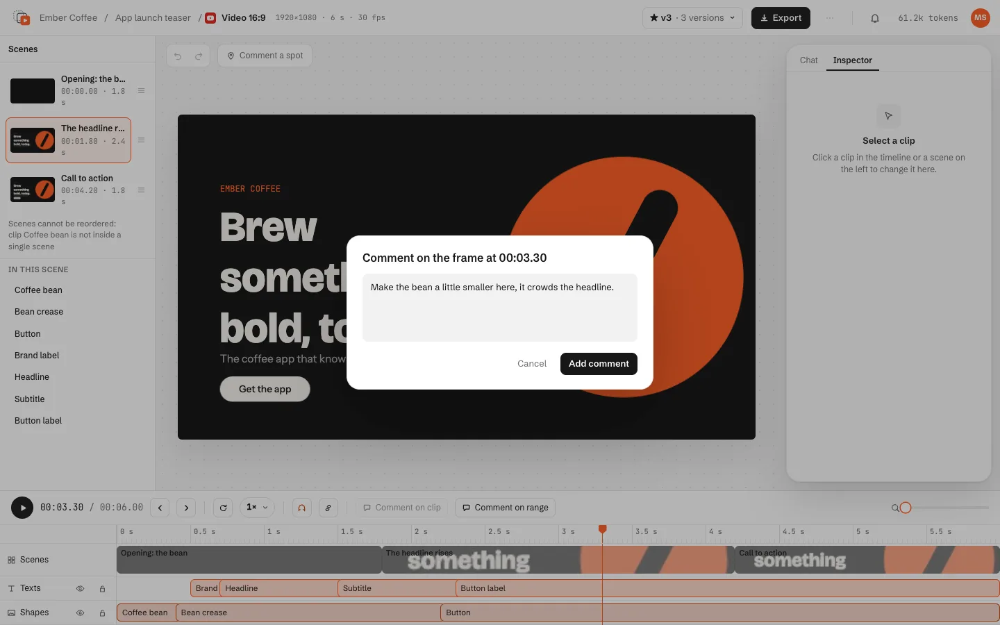

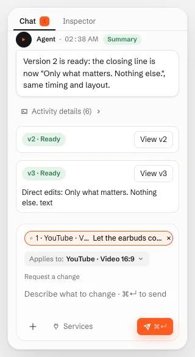
Editing an SVG
Select an SVG clip (a logo, an icon, a vector image): the Inspector's SVG content edits its colours (every distinct colour, replaced everywhere), its texts and its elements (fill, stroke, hide). Each change passes the same strict SVG check as identity formats. no screenshot
In the dark theme

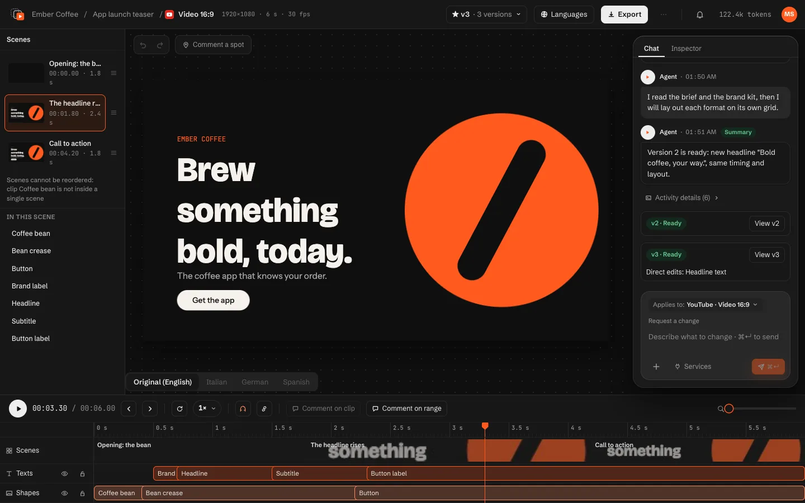
Subtitles
For a video with speech, Motion Studio makes subtitles from the transcription, and you edit them in their own editor. no screenshot
- The subtitle editor lists the cues with their text and times, on a timeline with the audio's waveform; edit a cue's text or drag its timing, per language.
- Add a language to translate the subtitles; retranslate the cues that changed.
- Download the
.srtor.vttfile, or choose in Export to draw them into the video, write them as files next to it, or add them as a soft MP4 track.
Subtitles need speech and a transcription method (Whisper or a paid service), which the demo does not have.
Formats and languages
Adding formats
Add formats in Edit the brief and press Save and regenerate: the agent adds only the missing compositions, in the same style. A format that follows another (TikTok following the Reel) needs no agent: it shares the composition and the render.

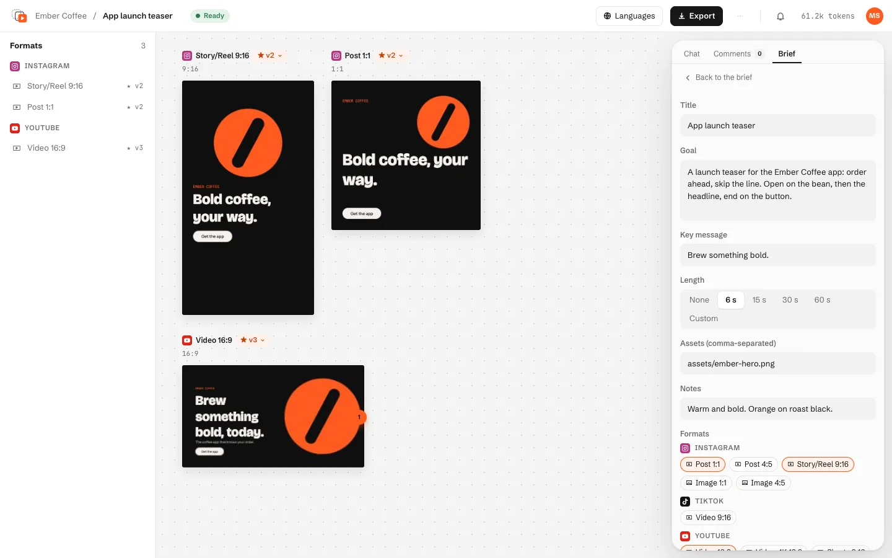
Duplicate and reorder formats
A creative can hold the same format more than once (up to 20 copies). In a format's ⋯ menu, Duplicate format copies the open version's composition into the next copy and saves it as a new version, with no agent. Label, reorder and remove copies in the brief editor.

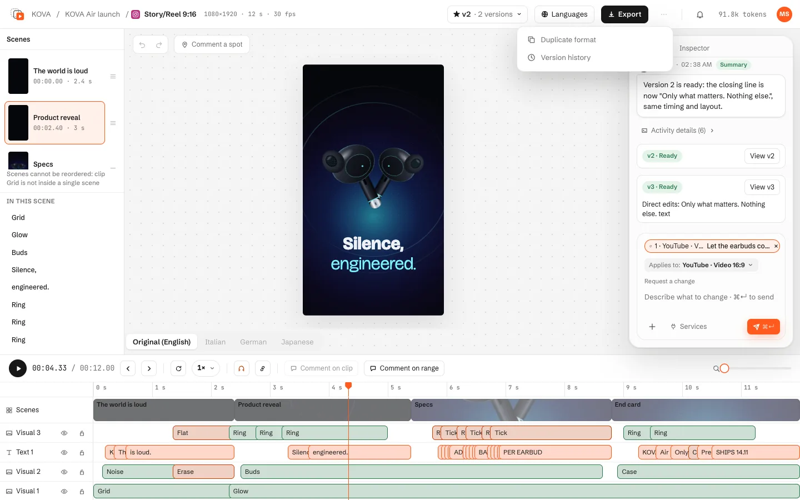
Languages
- In the brief editor, under Languages, pick the original language and up to 10 languages to translate into.
- The Languages button opens the panel: tick languages and formats and press Translate. The agent only writes the texts; positions, timings, colours and images stay the original's, and a text that does not fit its box is shortened.
- Per language, the voice is Translate (a new voice-over with the brief's voice service, after one confirmation), Keep original or Mute.
- Review each translation in a table, and switch the preview's language under the stage. Render and export per language: files are named
<format>.<language>.

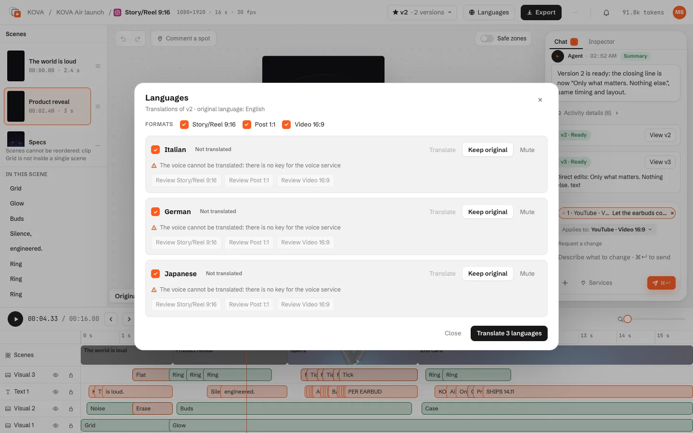
Right-to-left languages are listed but not supported yet. For scripts the original font cannot draw, Motion Studio adds the Noto Sans of that script.
Creative variants
A variant is a different creative direction for the same brief, with all the formats. A creative can have up to 5 (A to E).
- In New creative set Variants (1 to 5) and, if you like, a direction for each; empty ones are proposed by the agent. Later, + Variant adds one, from the brief or from a variant's latest version.
- Talk to one variant or to all: the chat names them ("variant C", "all variants").
- Pick, per format, the version to export from any variant: Choose on a board, or Final selection.
- Discard takes a variant out of the choice; Show discarded and Restore bring it back.

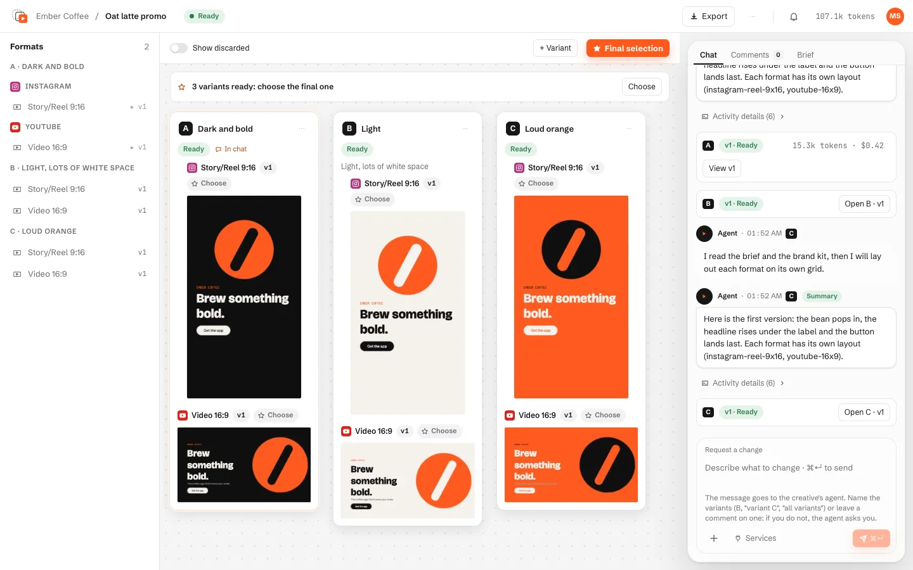

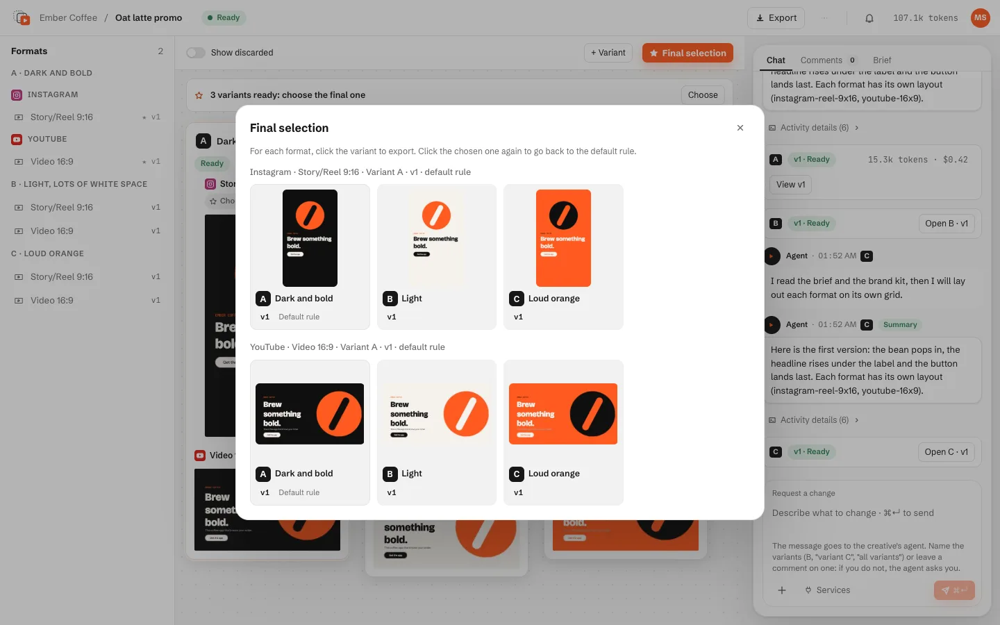

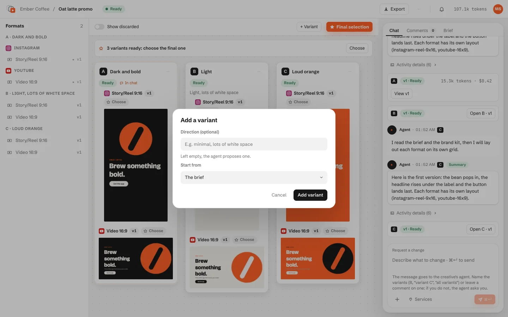
At most 2 variants work at the same time; the others wait in the queue. A discarded variant is read-only until you restore it. With paid services on, one cost confirmation covers a request sent to all.

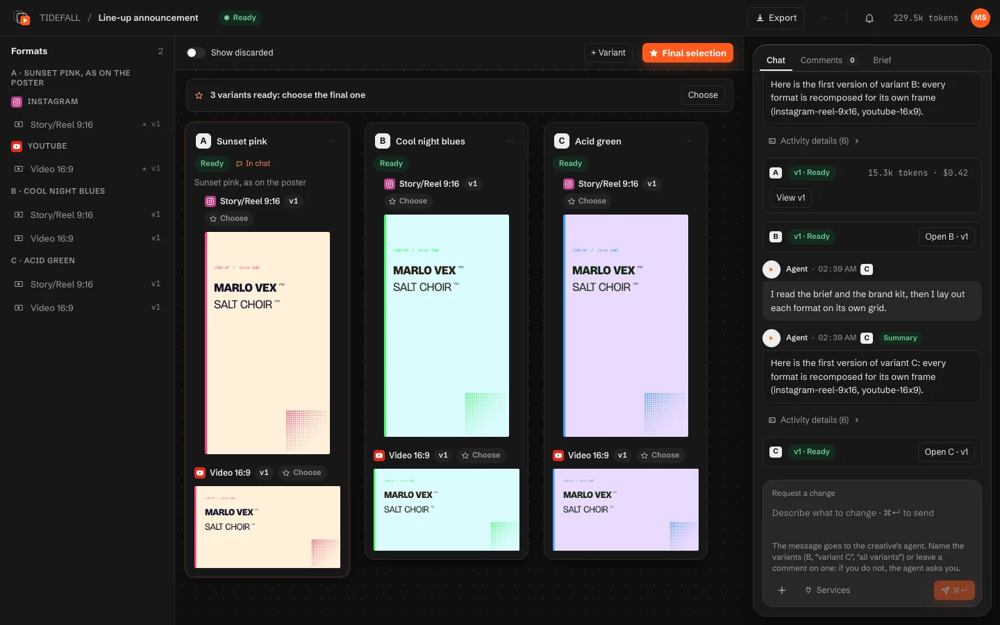
Identity formats and store pack
Logo, favicon, app icon, social preview
The Identity group has four formats. They render real file sets, drawn as SVG by the agent (no paid image generation):
| Format | What the render writes |
|---|---|
| Logo | logo.svg and logo.png (1024 px, transparent) |
| Website favicon | favicon.ico, favicon.svg, the Apple touch icon, 192 and 512 px icons, a maskable icon, site.webmanifest and a head-snippet.html to paste in your page |
| App icon | iOS AppIcon-1024.png and Contents.json; Android adaptive icon layers, Play Store icon and the mipmap-* sizes |
| Social preview | a 1200×630 image |
Picking a logo, favicon or app icon shows Start: From the brand logo (the agent adapts it, without redrawing it) or From scratch (a name or initials, style keywords, brand or free colours). A logo from scratch makes 3 concepts by default, as variants. The format's page then switches between Edit, Image and Sizes (every file of the set, and the icon in a browser tab, on iOS and on Android), and Use as brand logo adds a version to the brand kit.

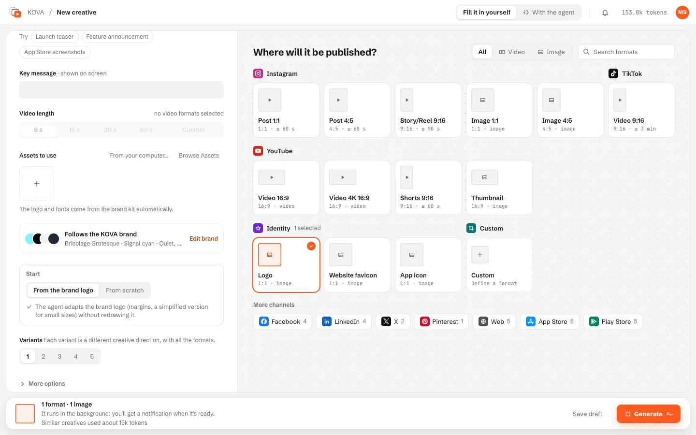
The Sizes view needs a rendered file set and is not pictured. A translated identity render makes only the main image, never the set.
App store pack
The Store pack tile (first in the App Store and Play Store groups) opens an assistant: the app, the stores (App Store, Google Play or both), the devices, the screenshots with a caption each, an optional preview video and your real app screens. It adds one format per screenshot and device. Export pack writes the files in the layout each store wants, checks sizes, formats and the preview video, and adds a README.txt with the upload order.

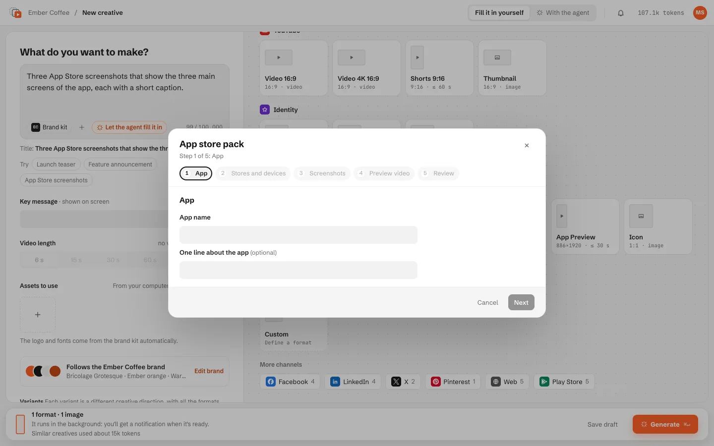
Export
Export copies the ★ version of each format into a folder you choose, rendering first what needs it.
- Press Export in the creative's top bar.
- Tick the formats, choose the folder (Save to), the Resolution, the Frame rate and the Quality (Standard, High, Max).
- Edit the file-name pattern with
{title} {channel} {format} {ratio} {v} {date}(and{locale}with languages); the dialog previews the names. Save as default keeps the pattern. - Press Export N files. The export runs in the background: the Export button shows its progress, the activity centre has Cancel, and Show in Finder appears when the files are there.

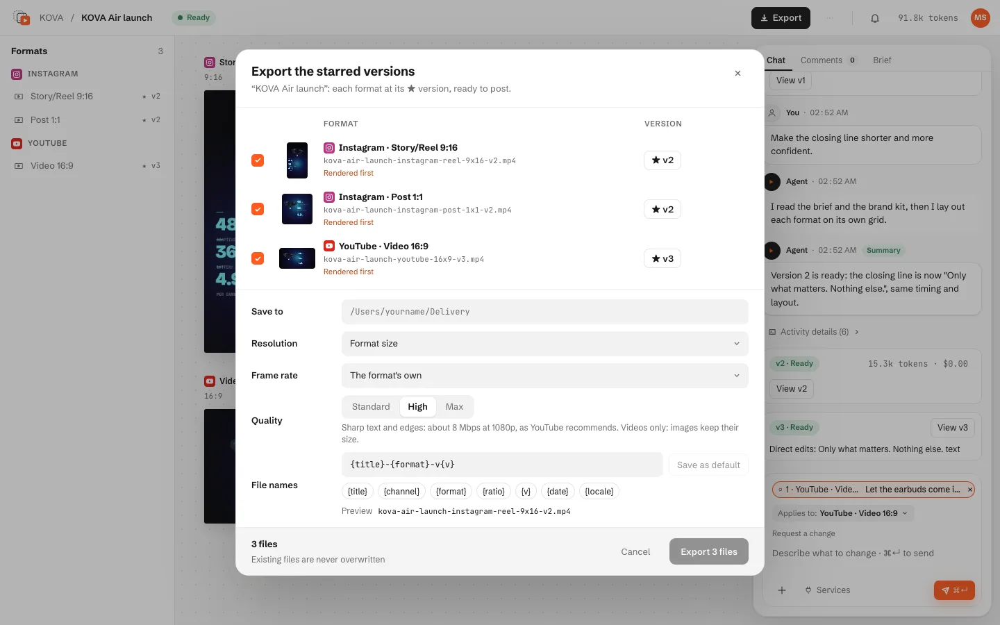
Export never overwrites a file (it adds -2, -3…), refuses destinations inside the workspace, and refuses two formats with the same name. A choice other than the format size at High is rendered for that export alone.
Git and your files
Everything stays on your computer, in plain files you can open.
- A project is a folder with
brand/,assets/,references/andcreatives/. Each creative keeps its working files inwork/and its versions inoutputs/vN/, one composition per format (composition.jsonand itsassets/). - Each version is a git commit of the project, so the history keeps every version, including deleted creatives.
- The agent cannot change the project's
.git/,.studio/,.claude/,CLAUDE.mdor.mcp.json, and Motion Studio runs git without the project's hooks.
Archive and delete
- From a creative's ⋯ menu (on its page or its card), Archive takes it out of the lists and search at once. Archived on the creatives page lists them, with Restore.
- Delete… asks first, then moves the creative's folder to the system Trash (recoverable until you empty it). The git history keeps every version.
- On a variant group, both act on all its variants; a single variant can be archived or deleted from its row menu.

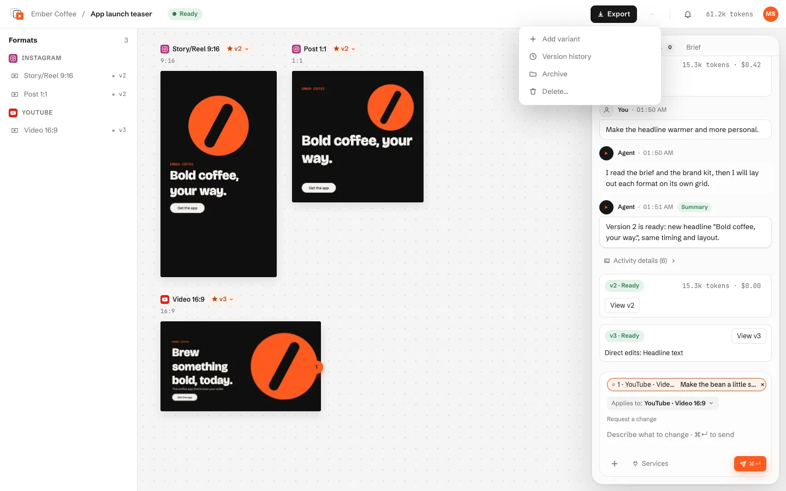

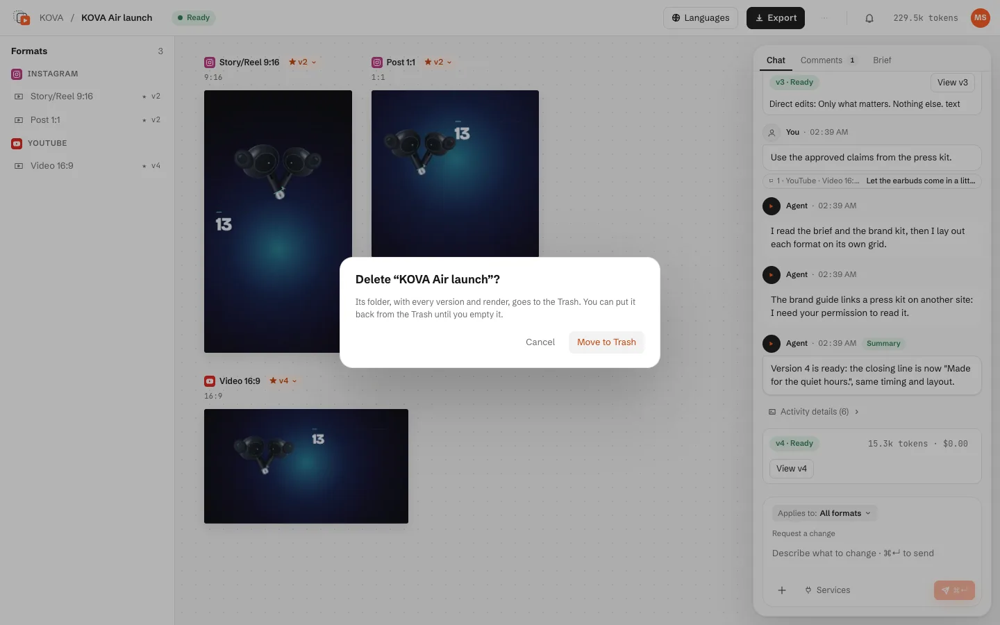

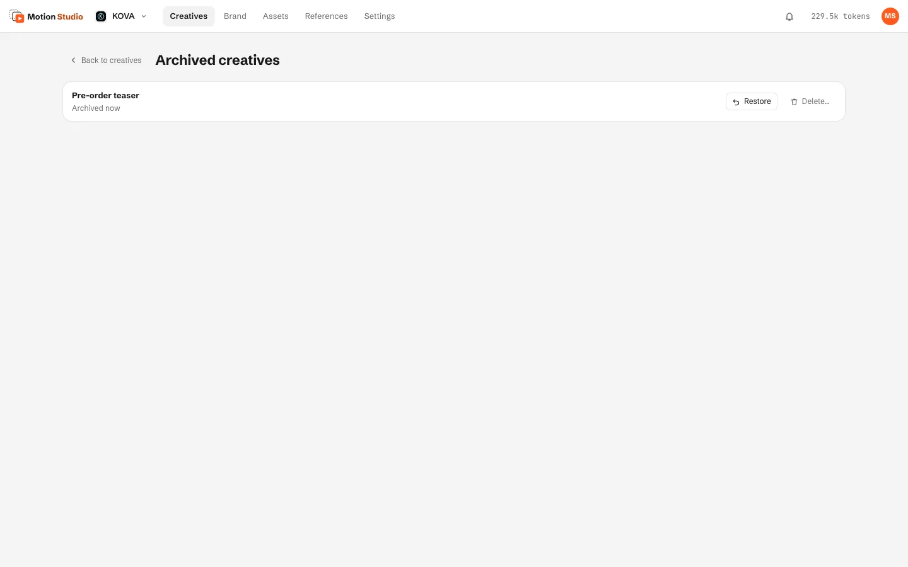

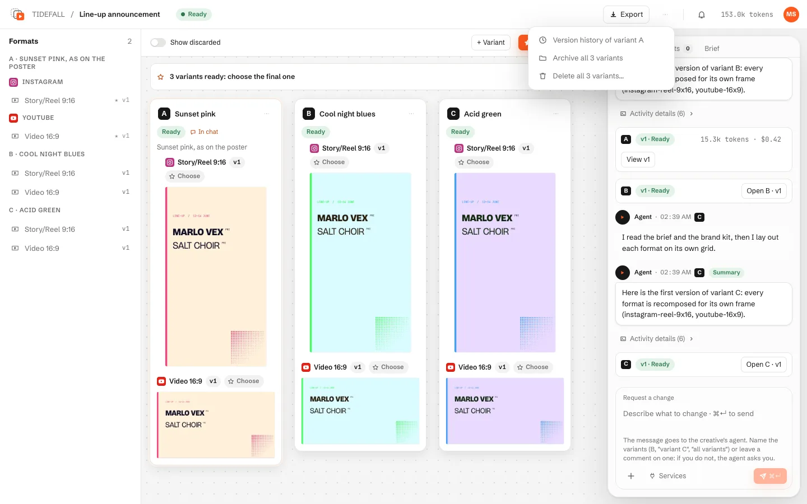
Neither is possible while a request, a queued request or a render of the creative is in progress. The agent never archives or deletes.
Usage and tokens
Every agent job records the tokens Claude Code reported and, when known, the cost at API list prices.
- The figure shown is input + output + cache-write tokens. On a Claude subscription the cost reads "at API prices it would be about…", since the usage counts toward your plan.
- You see it on the running job, in today's total in the top bar (it opens Usage), in the activity centre, on each version card, on brand analyses and in the brief.
- Settings → Usage shows the last 7 days, by project and by kind of work, and the paid services.

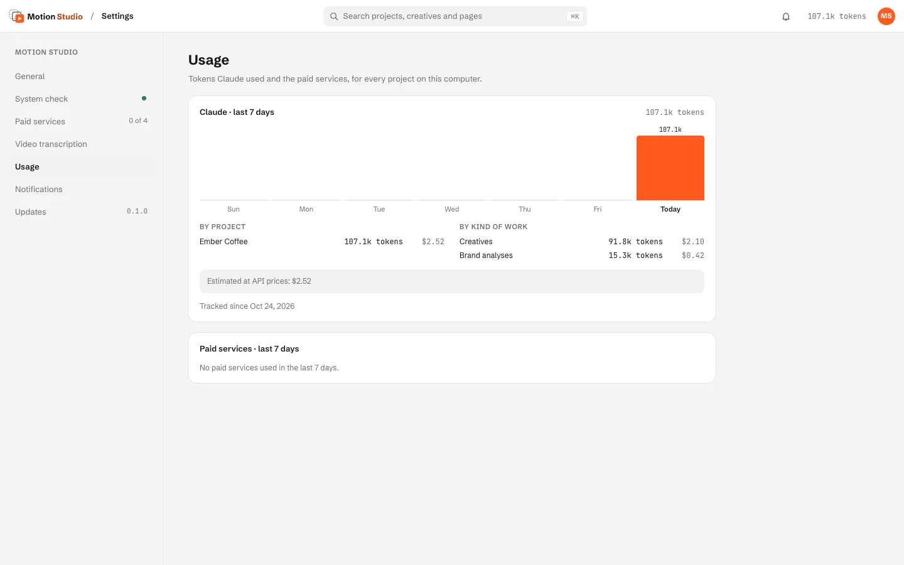
The bell opens the activity centre: what needs you, what is running (with Cancel) and what is done, with today's tokens.

The token counts in these screenshots come from the demo, not from a real Claude Code run.
Security
- Sandbox (macOS; Linux with bubblewrap and socat): every agent job runs isolated. It writes only in the project folder, cannot read sensitive folders (SSH keys, cloud credentials, keychains, Motion Studio's configuration), and reaches only package registries, CDNs and the domains you allow. If the sandbox cannot start, commands do not run.
- Automatic approval of sandboxed commands is safe because an approved command still runs inside the sandbox; everything else asks.
- Linked codebases and codebase brand sources are read-only; secret files are never opened.
- API keys stay in the system keychain; the agent never sees them, and its tools ask Motion Studio to call the providers.
- Compositions written by the agent are rendered outside the sandbox but isolated: their own local server, no network, sandboxed frames, and a render page whose requests outside the composition are blocked.
- Access code: Motion Studio's APIs answer only to the interface opened from the terminal link.
On Windows, Linux without bubblewrap, or with isolation turned off, the agent's commands can read and write anywhere you can. Motion Studio reports it in the System check; analyze only websites you trust.
Troubleshooting and limits
When something does not work
- The interface asks to reopen it from the terminal link: run
motion-studio --print-urland open that address. - "Motion Studio is already running": only one runs per configuration folder; the launcher opens the one already running.
- Outputs show as "unverified": install FFmpeg.
- No Chrome to render (npm version): Settings → System check offers to download Chrome for Testing.
- A version is incomplete: the chat says what is wrong and what to do; changing the brief's duration checks it again at once.
- An unsigned macOS app does not open: right-click it, then Open.
Current limits
- Folder names with glob characters (
( ) [ ] { } * ?, and\on macOS and Linux) are refused for workspaces, projects and codebases: rename the folder. - Image, voice, sound, music and stock providers are described but have not been verified live with real keys.
- Right-to-left languages are not supported yet; translated identity renders make only the main image.
- On Ubuntu 24.04 and later the AppImage may need an AppArmor profile to start.
More in the README and the docs.
Back to the top ↑